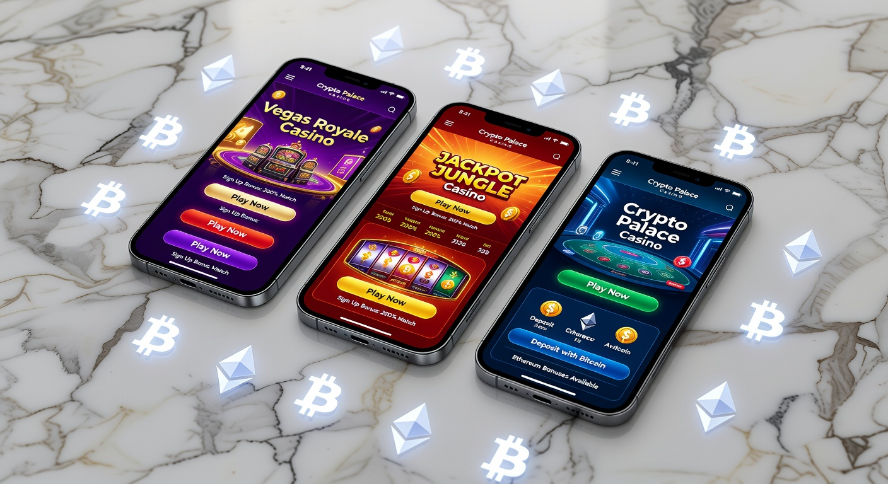
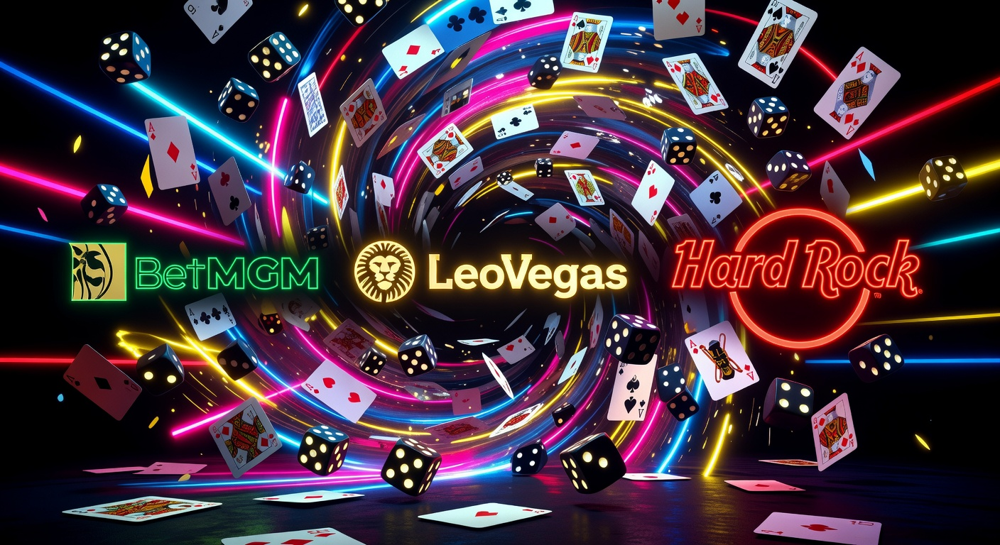
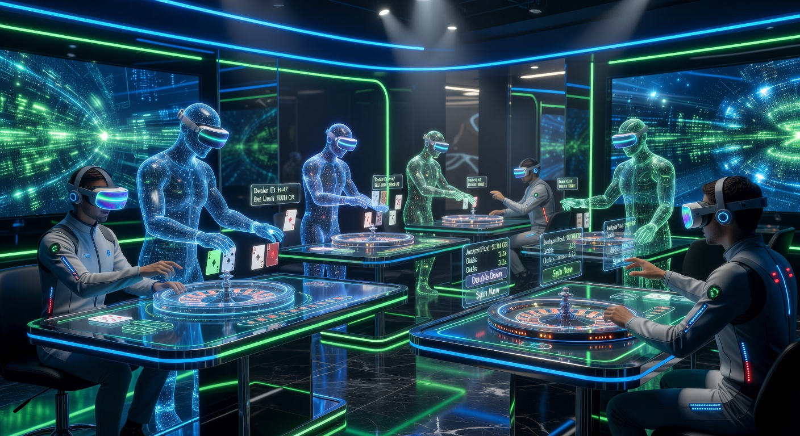
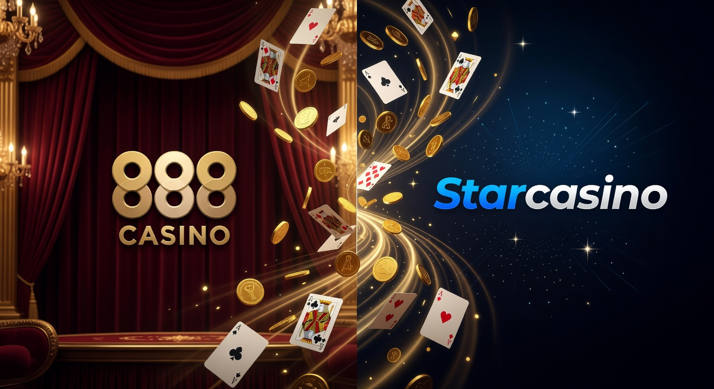

Nieuwe online casino’s in Nederland: De ultieme gids voor 2026
Het landschap van de Nederlandse gokmarkt is in 2026 volwassener en innovatiever dan ooit tevoren. Sinds de opening van de markt enkele jaren geleden, hebben we een enorme instroom gezien van kwalitatieve aanbieders. Een nieuwe online casino in 2026 moet van goeden huize komen om de kritische Nederlandse speler nog te kunnen verrassen. In dit uitgebreide overzicht duiken we diep in de wereld van de modernste goksites, de nieuwste technologieën en de strengere regelgeving die de veiligheid van spelers garandeert.
De focus ligt dit jaar niet alleen op het spelaanbod, maar vooral op de algehele gebruikerservaring. Of het nu gaat om razendsnelle uitbetalingen, gepersonaliseerde bonussen of de integratie van virtual reality in het live casino, de standaarden liggen hoog. Als speler in Nederland heb je meer keuze dan ooit, maar dat maakt het ook lastiger om het kaf van het koren te scheiden. Deze gids helpt je bij het vinden van een betrouwbaar platform dat perfect aansluit bij jouw speelstijl.
Het jaar 2026 markeert ook een punt waarop de synergie tussen fysieke casino's en digitale platforms optimaal is. Grote namen uit de industrie, zoals de Kansspelautoriteit, houden scherp toezicht op de naleving van de zorgplicht, waardoor een veilige omgeving gewaarborgd blijft. Laten we kijken naar wat een modern platform vandaag de dag echt onderscheidt.
Wat maakt een nieuwe online casino aantrekkelijk?
In een verzadigde markt als die van 2026 is "gewoon een casino zijn" niet langer voldoende. Een nieuwe online casino moet zich onderscheiden door unieke verkoopargumenten (USP's). Spelers zoeken naar platforms die hun tijd en geld waarderen. Dit vertaalt zich vaak in een combinatie van technologische hoogstandjes en een transparant beleid. De eerste indruk wordt vaak bepaald door de snelheid van de website en de intuïtieve navigatie.
Een ander cruciaal aspect is de snelheid van financiële transacties. In 2026 verwachten spelers dat winsten binnen enkele minuten, zo niet seconden, op hun rekening staan. Platforms die hierin achterblijven, verliezen snel terrein aan de concurrentie. Daarnaast speelt gamificatie een grote rol; het verzamelen van punten, het voltooien van missies en het stijgen in rang maken de ervaring interactiever dan de traditionele gokkast-omgeving.
Ten slotte is personalisatie de sleutel tot succes. Dankzij geavanceerde algoritmes kunnen moderne platforms suggesties doen op basis van je eerdere speelgedrag. Als je een liefhebber bent van blackjack, zul je vaker promoties zien die specifiek op tafelspellen gericht zijn. Dit zorgt voor een hogere betrokkenheid en een plezierigere ervaring voor de gebruiker.
Innovatieve technologieën en mobiele ervaring
De mobiele revolutie is in 2026 tot een hoogtepunt gekomen. Bijna 85% van de Nederlandse spelers bezoekt een nieuwe online casino via hun smartphone. Dit heeft ertoe geleid dat 'mobile-first' design de standaard is geworden. Apps zijn sneller, veiliger en bieden biometrische inlogopties zoals FaceID en vingerafdrukscanners, wat de veiligheid aanzienlijk verhoogt.
Daarnaast zien we de opkomst van Augmented Reality (AR) in de lobby van het casino. Je kunt als het ware door een virtuele casinovloer lopen vanuit je eigen woonkamer. Ook de integratie van 5G-technologie zorgt ervoor dat streamen in 4K-kwaliteit zonder enige vertraging mogelijk is, wat essentieel is voor een optimale ervaring in het live casino.
Unieke bonussen en promoties voor nieuwe spelers
De tijd van onrealistische bonussen met onmogelijke rondspeelvoorwaarden ligt achter ons. In 2026 zijn bonussen transparanter. Een nieuwe online casino biedt vaak 'sticky' bonussen of cashback-opties aan die eerlijker zijn voor de consument. Dit is mede te danken aan de strikte regels van de KSA, die misleidende reclames hard aanpakt.
We zien ook een trend naar 'no-wagering' free spins, waarbij winsten direct opneembaar zijn. Dit bouwt direct een vertrouwensband op met de speler. Loyaliteitsprogramma's zijn in 2026 meer gericht op directe beloningen dan op lange-termijn spaardoelen, waardoor ook de recreatieve speler zich gewaardeerd voelt.
Hoe wij elk nieuw online casino beoordelen
Onze redactie hanteert een strikt protocol bij het testen van elke nieuwe aanbieder. Het is essentieel dat een nieuwe online casino aan alle wettelijke eisen voldoet voordat we het überhaupt overwegen te vermelden. We kijken naar de licentie, de eigenaar van de site, en de reputatie van de moederorganisatie. Bedrijven zoals Tulipa Ent Limited en JVH gaming zijn bekende spelers die vaak garant staan voor kwaliteit.
Vervolgens testen we de volledige 'player journey'. Dit begint bij het registratieproces, waarbij we controleren hoe soepel de koppeling met iDIN en het CRUKS-register verloopt. Daarna storten we echt geld om de snelheid van verwerking en de aanwezigheid van iDEAL te verifiëren. We spelen diverse spellen van providers zoals Pragmatic Play en Evolution om de stabiliteit van de software te controleren.
Een cruciaal onderdeel van onze review is de klantenservice. We stellen complexe vragen via de live chat op verschillende tijdstippen om de responstijd en de deskundigheid van de medewerkers te testen. Alleen als een platform op al deze punten bovengemiddeld scoort, krijgt het een plek in onze aanbevelingen voor 2026.
De rol van de Nederlandse Kansspelautoriteit (KSA)
De KSA is de ruggengraat van de gereguleerde markt in nederland. In 2026 zijn hun bevoegdheden verder uitgebreid om consumenten te beschermen tegen gokverslaving en malafide praktijken. Elke nieuwe online casino die zich op de Nederlandse markt begeeft, moet een loodzware licentieprocedure doorlopen. Dit garandeert dat de spellen eerlijk verlopen en dat de financiële buffers van het bedrijf op orde zijn.
De toezichthouder let ook streng op de marketinguitingen. Reclames mogen niet gericht zijn op jongvolwassenen (18-24 jaar) en moeten altijd een duidelijke waarschuwing bevatten over de risico's van kansspelen. Dit zorgt voor een gezondere markt waarin verantwoord spelen centraal staat.
Veiligheid en het CRUKS-register
Veiligheid is het allerbelangrijkste wanneer je speelt bij een nieuwe online casino. Het Centraal Register Uitsluiting Kansspelen (CRUKS) speelt hierin een vitale rol. Sinds 2026 is de koppeling met dit systeem nog geavanceerder geworden, waardoor spelers zichzelf met één druk op de knop voor alle legale aanbieders kunnen uitsluiten.
Daarnaast maken moderne sites gebruik van geavanceerde encryptietechnologieën (SSL) om je persoonlijke en financiële gegevens te beschermen. Platforms zoals New Future Games BV investeren miljoenen in cybersecurity om hackers buiten de deur te houden. Als speler kun je er in 2026 vanuit gaan dat je data veiliger zijn dan ooit bij een gelicentieerde aanbieder.
Top 3 nieuwe casino's op de markt

In 2026 zijn er drie namen die er met kop en schouders bovenuit steken als het gaat om innovatie en betrouwbaarheid. Deze platforms hebben de standaard gezet voor wat een nieuwe online casino moet bieden. Hieronder volgt onze selectie op basis van spelaanbod, bonussen en uitbetalingssnelheid.
| Casino | Belangrijkste Kenmerk | Bonus 2026 | Rating |
|---|---|---|---|
| Goldbet | Grootste aanbod gokkasten | 100% tot €250 + 50 spins | 9.8/10 |
| Newlucky | Beste mobiele app | Wekelijkse cashback 15% | 9.6/10 |
| Dragobet | Snelste iDEAL betalingen | €10 free bet + 20 spins | 9.5/10 |
Goldbet is een uitstekende keuze voor de serieuze speler. Met een licentie die alle aspecten van veiligheid dekt, bieden ze een omgeving waar zowel high rollers als recreatieve spelers zich thuis voelen. Je kunt hun platform bezoeken via deze officiële Goldbet link voor de meest actuele welkomstbonus van 2026.
Voor wie op zoek is naar een frisse wind, is Newlucky een absolute aanrader. Hun focus op gebruikersgemak en een zeer modern design maakt hen populair onder de jongere generatie (24+) spelers. Ontdek het zelf bij Newlucky, waar innovatie en speelplezier hand in hand gaan.
Dragobet onderscheidt zich dan weer door een naadloze integratie van sportwedden en casino. Hun live sectie is van wereldklasse, mede dankzij de samenwerking met top-providers. Bekijk de mogelijkheden bij Dragobet en ervaar de snelheid van een modern 2026 platform.
Top 5 aanbieders: BetMGM, LeoVegas en Hard Rock

Naast de hierboven genoemde rijzende sterren, zijn er enkele gevestigde namen die recent hun platform volledig hebben vernieuwd. Een nieuwe online casino ervaring kan namelijk ook komen van een bestaande speler die zichzelf opnieuw heeft uitgevonden. Merken als BetMGM en LeoVegas hebben in 2026 enorme stappen gezet in de Nederlandse markt.
BetMGM brengt de glitter en glamour van Las Vegas direct naar je scherm. Hun aanbod van exclusieve gokkasten die je nergens anders vindt, maakt hen uniek. Ze maken deel uit van de grotere MGM-groep, wat zorgt voor een ongekende mate van vertrouwen en financiële stabiliteit. In 2026 is hun loyaliteitsprogramma "MGM Rewards" ook volledig gedigitaliseerd voor de Nederlandse markt.
LeoVegas, vaak de koning van het mobiele casino genoemd, blijft innoveren. Hun app is in 2026 wederom uitgeroepen tot de beste in de industrie. De snelheid waarmee spellen laden en het gemak waarmee je tussen live casino en slots schakelt, is ongeëvenaard. Bovendien hebben ze hun aanbod van tafelspellen zoals roulette en blackjack aanzienlijk uitgebreid met Nederlandstalige dealers.
BetMGM: De Amerikaanse reus in Nederland
Sinds de intrede van BetMGM op de Nederlandse markt, is het landschap veranderd. Ze hebben een enorme focus op entertainment. Het is niet zomaar een nieuwe online casino; het is een multimediaal platform waar je ook livestreams van sportwedstrijden kunt bekijken terwijl je speelt. Hun interface is donker, chic en straalt professionaliteit uit.
Hun welkomstbonus voor 2026 is een van de meest competitieve in de markt, vaak gecombineerd met tickets voor exclusieve evenementen. Dit laat zien dat ze de Nederlandse speler echt willen binden aan hun merk door meer te bieden dan alleen digitale spellen.
LeoVegas: Koning van het mobiele casino
LeoVegas heeft in 2026 zijn positie verstevigd door zwaar te investeren in eigen exclusieve content. Ze werken nauw samen met studio's om titels te ontwikkelen die alleen op hun platform te spelen zijn. Dit maakt hen een nieuwe online casino bestemming die je niet mag overslaan als je op zoek bent naar originaliteit.
De klantenservice van LeoVegas staat bekend als een van de snelste. In 2026 maken ze gebruik van AI-assistenten die simpele vragen direct oplossen, terwijl complexe zaken binnen enkele minuten door een Nederlandstalige medewerker worden opgepakt. Dit verhoogt de betrouwbaarheid aanzienlijk.
Hard Rock Casino: Entertainment van wereldklasse
Het Hard Rock Casino is in 2026 een begrip geworden in nederland. Bekend van hun fysieke locaties en hotels wereldwijd, hebben ze hun online platform getransformeerd tot een ware rockster-ervaring. De integratie met hun wereldwijde loyaliteitsprogramma betekent dat je online punten kunt sparen die je kunt verzilveren voor merchandise of hotelovernachtingen.
Het spelaanbod is doorspekt met muziek-gethematiseerde slots en live tafels waar de sfeer altijd bruisend is. Het is een nieuwe online casino omgeving die vooral fans van popcultuur en hoogwaardig entertainment zal aanspreken. Hun platform is robuust en biedt een zeer veilige speelomgeving onder toezicht van de KSA.
TonyBet: Focus op sport en casino
Tonybet is een andere speler die in 2026 veel aandacht trekt. Hoewel hun wortels in de sportwereld liggen, is hun casino-gedeelte nu net zo indrukwekkend. Ze bieden een enorme variëteit aan spellen van minder bekende providers, wat een verademing is tussen al het geweld van de grote studio's. Dit maakt het een interessante nieuwe online casino voor de ontdekkingsreiziger.
Voor spelers die graag afwisselen tussen een potje blackjack en een weddenschap op de Eredivisie, is Tonybet de ideale plek. Hun platform is overzichtelijk en zonder onnodige franje, wat de snelheid ten goede komt.
Nieuw Live Casino: Innovaties in 2026

Het live casino segment heeft in 2026 een enorme vlucht genomen. Waar we vroeger al blij waren met een korrelige verbinding naar een studio in Malta, spelen we nu in high-definition met multi-camera setups. De interactie met de dealers is persoonlijker geworden en de spellen zijn spectaculairder dan ooit. Een nieuwe online casino zonder een uitgebreide live sectie wordt simpelweg niet meer serieus genomen.
Bedrijven zoals Evolution en Pragmatic Play domineren de markt met innovatieve game shows. Titels als 'Lightning Roulette' zijn inmiddels klassiekers, maar in 2026 zien we nieuwe varianten waarbij fysieke elementen worden gecombineerd met digitale animaties. Dit zorgt voor een meeslepende ervaring die dicht in de buurt komt van een bezoek aan een echt casino.
Ook de opkomst van Nederlandstalige tafels is een zegen voor de lokale markt. Het kunnen communiceren met de dealer in je eigen taal verhoogt het speelplezier en zorgt voor een vertrouwde sfeer. Platforms zoals Fortunicabet hebben hier zwaar op ingezet door eigen studio's te openen met uitsluitend Nederlands personeel. Je kunt hun unieke aanbod bekijken via deze link naar Fortunicabet.
888 Casino en Starcasino: Gevestigde namen, nieuwe kansen

Ondanks de komst van vele kersverse partijen, blijven de 'oude rotten' zoals 888 Casino en Starcasino relevant door voortdurend te innoveren. In 2026 hebben deze merken hun platforms volledig herschreven om te voldoen aan de modernste webstandaarden. Ze bewijzen dat ervaring en vernieuwing prima samen kunnen gaan in een nieuwe online casino markt.
888 Casino staat bekend om zijn eigen softwareplatform (Section8), waardoor ze spellen kunnen aanbieden die je nergens anders vindt. Dit geeft hen een uniek voordeel ten opzichte van sites die alleen standaardpakketten van externe providers huren. Hun reputatie op het gebied van eerlijk spel en snelle uitbetalingen is in 2026 nog steeds onberispelijk.
Starcasino heeft zich in 2026 gepositioneerd als de specialist in high-end live gaming. Hun VIP-tafels bieden limieten die aantrekkelijk zijn voor de grotere spelers, terwijl de service van het hoogste niveau blijft. Het is een nieuwe online casino ervaring die luxe ademt, zonder de toegankelijkheid voor de gewone speler uit het oog te verliezen.
Betaalmethoden bij kersverse goksites
Het betaallandschap voor een nieuwe online casino in 2026 is overzichtelijk maar zeer efficiënt. De focus ligt op directheid. Niemand wil meer uren of dagen wachten op de verwerking van een transactie. De integratie van open banking-technologieën heeft dit mogelijk gemaakt. Beveiliging staat hierbij voorop, met verplichte twee-staps-verificatie (2FA) voor elke transactie.
Hoewel er veel opties zijn, blijft de Nederlandse markt uniek door haar voorkeur voor lokale oplossingen. Echter, internationale invloeden zijn merkbaar. We zien meer gebruik van e-wallets die gekoppeld zijn aan mobiele besturingssystemen, wat het doen van een storting reduceert tot een simpele druk op de knop of een gezichtsscan.
Snel en veilig storten met iDEAL
iDEAL is en blijft de onbetwiste koning van de betaalmethoden in nederland. In 2026 is iDEAL 2.0 volledig uitgerold, wat betekent dat betalingen nog sneller verlopen en de interface naadloos aansluit op de omgeving van het casino. Een nieuwe online casino kan in Nederland eigenlijk niet opereren zonder deze methode aan te bieden.
Het grote voordeel van iDEAL is dat de speler werkt binnen de vertrouwde omgeving van zijn eigen bank. Er worden geen gevoelige creditcardgegevens gedeeld met het casino, wat het risico op fraude minimaliseert. Bovendien zijn stortingen via iDEAL direct beschikbaar, zodat je meteen kunt beginnen met spelen op je favoriete gokkasten.
Alternatieven: Trustly, PayPal en creditcards
Naast iDEAL zien we in 2026 een sterke aanwezigheid van Trustly. Deze dienst maakt het mogelijk om te spelen bij een nieuwe online casino zonder een uitgebreid registratieformulier in te vullen, doordat de benodigde gegevens veilig via de bank worden geverifieerd. Dit concept, vaak aangeduid als Pay N Play, wint nog steeds aan populariteit.
PayPal blijft een favoriet voor spelers die hun gokbudget strikt gescheiden willen houden van hun hoofdrekening. De kopersbescherming en het gebruiksgemak maken het een solide keuze. Creditcards zoals Visa en Mastercard worden uiteraard ook overal geaccepteerd, vaak in combinatie met extra beveiligingslagen zoals 'Verified by Visa'.
Nieuwe online casino bonussen uitgelegd
Bonussen zijn in 2026 geraffineerder geworden. Een nieuwe online casino gebruikt ze niet alleen om klanten te lokken, maar ook om ze te behouden. We zien een verschuiving van eenmalige grote bedragen naar kleinere, frequentere beloningen. Dit past beter bij het speelgedrag van de gemiddelde Nederlander die voor zijn plezier een gokje waagt.
Het is belangrijk om altijd de kleine lettertjes te lezen, hoewel deze in 2026 door de KSA-regels veel duidelijker moeten worden weergegeven. Let vooral op de 'game weighting'; niet elk spel draagt voor 100% bij aan het rondspelen van je bonus. Blackjack en roulette tellen vaak minder zwaar mee dan slots vanwege het lagere huisvoordeel.
Een interessante nieuwkomer in het bonuslandschap is Spinorhino. Zij bieden een innovatief systeem waarbij bonussen worden aangepast aan je favoriete spellen. Speel je veel live, dan krijg je live-tegoed. Ben je een slots-fanaat, dan liggen de free spins voor je klaar. Ontdek dit gepersonaliseerde aanbod bij Spinorhino.
Free spins bij registratie
De klassieke 'no deposit' bonus is zeldzamer geworden in 2026, maar free spins bij je eerste storting zijn de standaard. Een nieuwe online casino geeft vaak tussen de 50 en 200 spins weg op populaire titels van Pragmatic Play. Het mooie aan de markt van 2026 is dat de winsten uit deze spins vaak direct cash geld zijn, zonder verdere inzetvereisten.
Dit soort promoties zijn ideaal om een nieuw platform te verkennen zonder al te veel risico te lopen. Je kunt de software testen, zien hoe de site reageert op je mobiel, en misschien zelfs een leuke winst overhouden aan je welkomstpakket.
Stortingsbonussen en inzetvereisten
De traditionele 100% match bonus is nog steeds populair. Als je €100 stort bij een nieuwe online casino, krijg je €100 extra om mee te spelen. In 2026 zijn de inzetvereisten (wagering) meestal rond de 20x tot 30x het bonusbedrag, wat aanzienlijk eerlijker is dan de 50x die we in het verleden wel eens zagen.
Sommige platforms bieden 'parachute bonussen' aan. Dit betekent dat je eerst met je eigen geld speelt. Win je een mooi bedrag? Dan kun je dit direct uitbetalen en de bonus laten vervallen. Pas als je eigen geld op is, wordt het bonussaldo geactiveerd. Dit is de meest speler-vriendelijke vorm van een bonus in 2026.
Het spelaanbod van moderne platforms
In 2026 is de variëteit aan spellen duizelingwekkend. Een gemiddelde nieuwe online casino heeft tussen de 3.000 en 5.000 verschillende titels in de lobby staan. Dit varieert van klassieke fruitautomaten tot complexe video slots met duizenden winlijnen (Megaways). De graphics zijn van bioscoopkwaliteit en de soundtracks worden vaak gecomponeerd door bekende artiesten.
Naast de bekende slots is er ook veel ruimte voor 'crash games', zoals Aviator. Deze spellen zijn snel, simpel en bieden een hele andere dynamiek dan de traditionele gokkasten. Ze zijn enorm populair geworden omdat spelers zelf het moment van uitstappen bepalen, wat een gevoel van controle geeft over de uitkomst.
Tafelspellen hebben ook een digitale transformatie ondergaan. We zien 'First Person' varianten van bekende spellen, waarbij je in een 3D-omgeving speelt maar zonder live dealer. Met één druk op de knop kun je overschakelen naar de live versie van hetzelfde spel. Deze hybride vorm is een van de grootste trends in 2026 bij elk nieuwe online casino.
Live casino innovaties
De innovatie in het live casino stopt niet bij betere streams. In 2026 zien we de opkomst van community betting. Je kunt zien wat andere spelers inzetten en zelfs 'mee-wedden' met een succesvolle speler aan de tafel. Dit sociale aspect maakt het gokken online een stuk minder eenzaam.
Ook zijn er meer niches bijgekomen. Denk aan live bingo, live loterijen en zelfs live bordspellen zoals Monopoly en Snakes & Ladders. De presentatoren zijn meer entertainers dan alleen maar dealers, wat zorgt voor een hoge amusementswaarde, zelfs als je even niet aan het winnen bent.
Nieuwe spelproviders en gokkasten
Terwijl giganten als Pragmatic Play en NetEnt hun dominantie behouden, is er in 2026 veel ruimte voor kleinere, creatieve studio's. Merken als NoLimit City en Hacksaw Gaming zijn geliefd vanwege hun hoge volatiliteit en unieke spelmechanismen. Een nieuwe online casino dat deze providers in het assortiment heeft, laat zien dat het de markt begrijpt.
De gokkasten van tegenwoordig zijn meer dan alleen rollen die draaien. Ze vertellen verhalen, hebben uitgebreide bonuslevels die lijken op videogames en bieden enorme jackpots. De integratie van progressieve systemen waarbij duizenden spelers tegelijkertijd bijdragen aan één grote prijzenpot, blijft een enorme trekpleister.
Nieuw online casino 2026: Wat we nog verwachten
De rest van 2026 belooft nog veel goeds. Er staan verschillende grote buitenlandse partijen op het punt om hun Nederlandse licentie te bemachtigen. Dit zal de concurrentie verder aanwakkeren, wat alleen maar gunstig is voor de speler. Een nieuwe online casino zal nog harder moeten vechten voor je aandacht met betere service en mooiere promoties.
We verwachten ook een verdere integratie van kunstmatige intelligentie. Niet alleen voor de klantenservice, maar ook om verantwoord spelen te bevorderen. AI kan patronen herkennen die duiden op beginnend probleemgedrag nog voordat de speler het zelf doorheeft. De nieuwe online casino van de nabije toekomst is dus niet alleen leuker, maar ook veiliger.
Bovendien zal de grens tussen gamen en gokken verder vervagen. Skill-based games, waarbij je behendigheid een rol speelt bij de uitbetaling, zijn in ontwikkeling en wachten op goedkeuring van toezichthouders. Dit zou een compleet nieuwe doelgroep naar het online casino kunnen trekken.
Nieuw Casino Zonder Registratie
Hoewel de term "zonder registratie" in de strikte zin van het woord niet mogelijk is in nederland vanwege de wetgeving rondom identificatie, komt het Pay N Play concept er heel dichtbij. In 2026 is dit proces zo gestroomlijnd dat je binnen 60 seconden kunt spelen bij een nieuwe online casino. Je identiteit wordt op de achtergrond geverifieerd via je bankrekening (iDIN).
Dit verwijdert een enorme drempel voor veel spelers die geen zin hebben in het uploaden van paspoorten en energierekeningen. De veiligheid blijft echter gewaarborgd, omdat de bank al alle nodige checks heeft uitgevoerd. Het is de perfecte balans tussen snelheid en compliance in de moderne gokmarkt.
Is online gokken legaal in Nederland?
Ja, online gokken is sinds oktober 2021 volledig legaal in nederland, mits de aanbieder beschikt over een vergunning van de Kansspelautoriteit. In 2026 is de markt stabiel en zijn de meeste grote internationale merken aanwezig. Spelen bij een nieuwe online casino met een KSA-licentie betekent dat je juridisch beschermd bent en dat de spellen eerlijk zijn.
Het is belangrijk om altijd te controleren of het logo van de KSA onderaan de website staat. Dit logo moet ook een link bevatten naar de officiële verificatiepagina van de toezichthouder. Gokken bij illegale aanbieders is niet alleen strafbaar, maar brengt ook grote risico's met zich mee wat betreft de uitbetaling van je winsten en de veiligheid van je gegevens.
Het laatste casinonieuws!
De sector is constant in beweging. Recentelijk hebben we gezien dat de regels omtrent speellimieten verder zijn aangescherpt. Elke nieuwe online casino moet nu actiever ingrijpen wanneer een speler zijn vooraf ingestelde limieten nadert. Dit is een positieve ontwikkeling die de duurzaamheid van de industrie ten goede komt.
Ook de strijd tegen witwassen (AML) is in 2026 geïntensiveerd. Dit betekent dat je soms gevraagd kan worden naar de herkomst van je vermogen als je met zeer grote bedragen speelt. Hoewel dit soms als een inbreuk op de privacy kan voelen, is het essentieel voor het behoud van een schone en legale gokmarkt in nederland.
Beloningsprogramma's en VIP-voordelen
VIP-programma's zijn in 2026 transparanter dan ooit. In plaats van vage beloften achter gesloten deuren, werken veel nieuwe online casino platforms met een duidelijk levelsysteem. Je ziet precies hoeveel punten je nog nodig hebt voor de volgende beloning. Dit kunnen free spins zijn, maar ook fysieke prijzen zoals de nieuwste tech-gadgets.
Voor de echt grote spelers zijn er nog steeds persoonlijke accountmanagers. Zij zorgen voor snellere uitbetalingen en op maat gemaakte bonussen. Echter, de zorgplicht van het casino blijft ook voor VIP's gelden; ook zij worden gemonitord op verantwoord speelgedrag, wat een geruststellende gedachte is.
Nieuwe online casino buitenland vs Nederland
Veel spelers vragen zich af of ze beter bij een nieuwe online casino uit het buitenland kunnen spelen of bij een Nederlandse aanbieder. In 2026 is het antwoord simpel: de Nederlandse aanbieders bieden meer veiligheid en betere betaalopties zoals iDEAL. Hoewel buitenlandse sites soms grotere bonussen beloven, wegen de risico's niet op tegen de voordelen.
Nederlandse casino's betalen bovendien direct de kansspelbelasting voor je, zodat je netto-winst ook echt jouw geld is. Bij een buitenlandse aanbieder ben je vaak zelf verantwoordelijk voor de aangifte, wat een hoop administratief gedoe kan opleveren. Kies daarom altijd voor een platform met een lokale licentie voor de beste ervaring.
Veelgestelde vragen over goksites
Hieronder beantwoorden we enkele van de meest prangende vragen die spelers hebben in 2026 over het kiezen van een nieuwe online casino.
Wat is de beste nieuwe online casino van 2026?
Dat hangt af van je persoonlijke voorkeur, maar op basis van onze tests scoort Goldbet momenteel het hoogst op betrouwbaarheid en spelaanbod. Ook Newlucky en Dragobet zijn uitstekende opties voor de moderne speler.
Hoe lang duurt een uitbetaling gemiddeld?
Bij de meeste platforms die wij aanbevelen, zoals Hard Rock Casino en BetMGM, staat je geld binnen 15 minuten op je rekening dankzij de directe koppeling met Nederlandse banken.
Zijn mijn gegevens veilig bij een nieuwe aanbieder?
Ja, mits het casino een vergunning heeft van de KSA. Zij hanteren de strengste eisen op het gebied van data-encryptie en privacybescherming onder de AVG-richtlijnen.
Kan ik overal met iDEAL betalen?
Vrijwel elk nieuwe online casino dat zich legaal op Nederland richt, biedt iDEAL aan als primaire betaalmethode. Het is de standaard voor veilig online betalen in 2026.
Wat moet ik doen als ik mijn gokgedrag niet meer onder controle heb?
Je kunt jezelf direct inschrijven in het CRUKS-register. Dit ontzegt je de toegang tot alle legale fysieke en online casino's in Nederland voor een periode van minimaal zes maanden.
Digitale marketeer en contentspecialist met ruim 7 jaar ervaring.